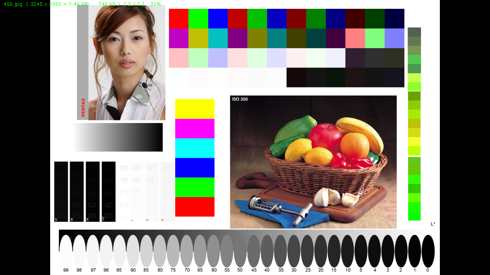
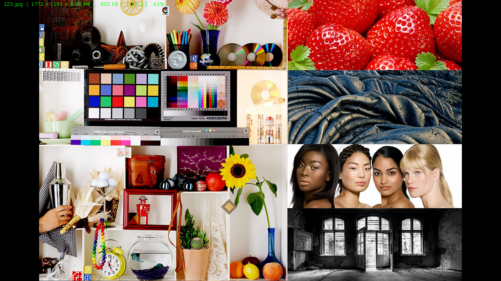

Image comparison report
An analysis of uhd630-dither-off-2.png.png and uhd630-dither-on-1.png.png
This report was generated by the TwinPix application. It provides a comparison of the two images, highlighting their differences and similarities.
| uhd630-dither-off-2.png.png | uhd630-dither-on-1.png.png |
|---|---|
|
 |  |
{kind=link}
{kind=link}
Difference In Pixel Values v.1 (Image, Single Color)
Comparison of image saturation
| uhd630-dither-off-2.png | 0.2 |
| uhd630-dither-on-1.png | 0.3 |
| Image uhd630-dither-on-1.png is 49.9% more saturated | |
The range of coefficient values is [0.0, 1.0]. Higher values indicate a more saturated image.
Comparison of image contrast
| uhd630-dither-off-2.png | 104.0 |
| uhd630-dither-on-1.png | 88.3 |
| Image uhd630-dither-off-2.png is 17.7% more contrasting | |
The range of coefficient values is [0, ∞).
The minimum contrast value is 0, which corresponds to an image with completely uniform brightness for all pixels (e.g., a solid color).
Difference In Pixel Values v.2 (Text)
| Range | Pixel Count | Pixel Count (%) |
|---|---|---|
| 0...0 | 145 181 | 15.7% |
| 1...1 | 2 860 | 0.3% |
| 2...2 | 2 041 | 0.2% |
| 3...3 | 1 594 | 0.1% |
| 4...4 | 985 | 0.1% |
| 5...5 | 1 718 | 0.1% |
| 6...10 | 12 351 | 1.3% |
| 11...15 | 12 968 | 1.4% |
| 16...20 | 14 274 | 1.5% |
| 21...30 | 29 312 | 3.1% |
| 31...40 | 25 911 | 2.8% |
| 41...50 | 26 475 | 2.8% |
| 51...60 | 25 335 | 2.7% |
| 61...70 | 28 130 | 3% |
| 71...80 | 29 591 | 3.2% |
| 81...90 | 26 317 | 2.8% |
| 91...100 | 25 686 | 2.7% |
| 101...150 | 132 177 | 14.3% |
| 151...200 | 146 038 | 15.8% |
| 201...255 | 232 656 | 25.2% |
Range contains the absolute values by which the pixels differ in any of the R, G, or B components.
Difference In Pixel Values v.2 (Image, Multicolor)
Comparison of image brightness
| Parameter | Pixel Count | Pixel Count (%) |
| Total pixels | 921 600 | 100% |
| Pixels with the same brightness in uhd630-dither-off-2.png and uhd630-dither-on-1.png | 145 181 | 15.7% |
| Brighter pixels in uhd630-dither-off-2.png than in uhd630-dither-on-1.png | 445 708 | 48.3% |
| Darker pixels in uhd630-dither-off-2.png than in uhd630-dither-on-1.png | 330 711 | 35.8% |
| Parameter | Value |
| Overall brightness uhd630-dither-off-2.png | 111 782 721 |
| Overall brightness uhd630-dither-on-1.png | 95 393 049 |
| Image uhd630-dither-off-2.png is 17.1% brighter | |
The algorithm makes a conclusion based on the total brightness of all pixels. This means that there may be fewer brighter pixels, but their total brightness will be higher than that of the second image.
Comparison of image sharpness
| uhd630-dither-off-2.png | 0.0 |
| uhd630-dither-on-1.png | 0.1 |
| Image uhd630-dither-on-1.png is 9.22337e+17% sharper | |
The range of coefficient values is approx [0.0, 1.414]. Where higher values indicate a more sharper image.
Linear/non-linear difference between images
| Mean difference | -18 |
| Threshold | 5 |
| Standard deviation of the difference | 1.2e+02 |
| The difference between the graphics cards is non-linear or inconsistent | |
Mean Difference: the average difference in brightness between corresponding pixels of two images. A value close to 0 means the images are very similar in brightness. A positive value indicates that the second image is generally brighter than the first. A negative value indicates that the second image is generally darker than the first.
Threshold: a predefined value used to determine if differences are small and consistent or large and inconsistent. If the standard deviation of the differences is smaller than this threshold, the differences are considered to be small and consistent across all pixels. If the standard deviation exceeds this threshold, it suggests that there are significant variations in how the two images differ, which may indicate non-linear behavior or inconsistencies.
Standard Deviation: measures how much pixel brightness differences vary; a low value indicates consistent differences, while a high value suggests variability.A small standard deviation means that most of the pixel differences are close to the mean difference, indicating consistent behavior across the image. A large standard deviation means that there is significant variability in how different pixels compare, suggesting inconsistencies or non-linear behavior.
Difference In Pixel Values v.3 (Image, Python Plugin)
Compare two images' gamma curves via normalized histograms (Python Plugin)
.png)
Reference information on algorithms
Do not skip this section when reading the report, as it explains how these algorithms work and provides the default parameter values for the algorithms. This is important because running the algorithms in auto-analysis mode does not allow changing these parameters through dialog windows, and the algorithm uses default values.
Difference In Pixel Values v.1 (Image, Single Color)
Type: Comparator.
Full Name: Difference In Pixel Values v.1 (Image, Single Color).
Short Name (Menu Display): Difference In Pixel Values v.1 (Image, Single Color).
Hotkey: D.
Description: Show the difference in pixel values as an image. Pixels that differ are marked with red dots.
Comparison of image saturation
Type: Comparator.
Full Name: Comparison of image saturation.
Short Name (Menu Display): Saturation.
Hotkey: T.
Description: This algorithm calculates average saturation based on pixel HSV values. The range of claculated coefficient values is [0.0, 1.0]. Where higher values indicate a more saturated image.
Comparison of image contrast
Type: Comparator.
Full Name: Comparison of image contrast.
Short Name (Menu Display): Contrast.
Hotkey: K.
Description: The algorithm calculates the contrast of an image based on the statistical analysis of pixel brightness (luminance). It does not compare brightness directly but uses it to determine the spread of values, allowing for the assessment of differences between light and dark areas of the image.
Difference In Pixel Values v.2 (Text)
Type: Comparator.
Full Name: Difference In Pixel Values v.2 (Text).
Short Name (Menu Display): Difference In Pixel Values v.2 (Text).
Hotkey: V.
Description: This algorithm compares two images by analyzing the difference in the colors of each pixel. For each pixel, the difference in color brightness (red, green, blue) is calculated, and based on these differences, the pixels are categorized into predefined ranges. It shows the result in text form.
Difference In Pixel Values v.2 (Image, Multicolor)
Type: Comparator.
Full Name: Difference In Pixel Values v.2 (Image, Multicolor).
Short Name (Menu Display): Difference In Pixel Values v.2 (Image, Multicolor).
Hotkey: M.
Description: This algorithm compares two images by analyzing the difference in the colors of each pixel. For each pixel, the difference in color brightness (red, green, blue) is calculated, and based on these differences, the pixels are categorized into predefined ranges. It shows the result as an image. As pecific color is used to indicate the pixel's belonging to a particular range.
2. Red - Range: 1-1. Example: RGB(255, 0, 0).
3. Green - Range: 2-2. Example: RGB(0, 255, 0).
4. Blue - Range: 3-3. Example: RGB(0, 0, 255).
5. Yellow - Range: 4-4. Example: RGB(255, 255, 0).
6. Magenta - Range: 5-5. Example: RGB(255, 0, 255).
7. Cyan - Range: 6-10. Example: RGB(0, 255, 255).
8. Purple - Range: 11-15. Example: RGB(128, 0, 128).
9. Orange - Range: 16-20. Example: RGB(255, 165, 0).
10. Brown - Range: 21-30. Example: RGB(139, 69, 19).
11. Dark Green - Range: 31-40. Example: RGB(0, 100, 0).
12. Gray - Range: 41-50. Example: RGB(128, 128, 128).
13. Black - Range: >51. Example: RGB(0, 0, 0).
Comparison of image brightness
Type: Comparator.
Full Name: Comparison of image brightness.
Short Name (Menu Display): Brigthness.
Hotkey: N.
Description: This algorithm compares the brightness of corresponding pixels in two images. The result provides percentages of pixels with the same color, brighter pixels in the first image, and darker pixels in the second image. The algorithm makes a conclusion based on the total brightness of all pixels. This means that there may be fewer brighter pixels, but their total brightness will be higher than that of the second image.
Comparison of image sharpness
Type: Comparator.
Full Name: Comparison of image sharpness.
Short Name (Menu Display): Sharpness.
Hotkey: H.
Description: This algorithm compares the sharpness of two images by calculating their sharpness values based on the gradient magnitude of pixel intensity differences in both the horizontal and vertical directions. The range of coefficient values is approx [0.0, 1.414]. Where higher values indicate a more sharper image.
Linear/non-linear difference between images
Type: Comparator.
Full Name: Linear/non-linear difference between images.
Short Name (Menu Display): Linear/non-linear difference between images.
Hotkey: L.
Description: This algorithm checks whether the difference between two graphics cards is linear and consistent for all pixels. To achieve this, a statistical analysis of the difference between two images is performed. If the difference between corresponding pixels of the two images is not constant or predictable (e.g., depends on brightness or other factors), it indicates non-linearity.
Properties
| Parameter Name | Parameter Description |
|---|---|
| Threshold | Variable Type: Real. Description: Threshold: a predefined value (default: 5.0) used to determine if differences are small and consistent or large and inconsistent. If the standard deviation of the differences is smaller than this threshold, the differences are considered to be small and consistent across all pixels. If the standard deviation exceeds this threshold, it suggests that there are significant variations in how the two images differ, which may indicate non-linear behavior or inconsistencies. Default Value: 5. Max Value: 255. Min Value: 0. |
Difference In Pixel Values v.3 (Image, Python Plugin)
Type: Comparator.
Full Name: Difference In Pixel Values v.3 (Image, Python Plugin).
Short Name (Menu Display): Difference In Pixel Values v.3 (Image, Python Plugin).
Hotkey: Q.
Description: This algorithm compares two images pixel by pixel and retains only those pixels that differ between the two compared images. It allows selecting the color of the points that mark the differing pixels.
Properties
| Parameter Name | Parameter Description |
|---|---|
| Dot Color | Variable Type: List of String Values. Description: Dot Color. Alternative Values: black, red, green, blue, yellow, cyan, magenta, white, orange, purple, lime. Default Choice: red. |
| Show Image | Variable Type: List of String Values. Description: Show Image. Alternative Values: yes, no. Default Choice: yes. |
Compare two images' gamma curves via normalized histograms (Python Plugin)
Type: Comparator.
Full Name: Compare two images' gamma curves via normalized histograms (Python Plugin).
Short Name (Menu Display): Gamma (Python Plugin).
Hotkey: Z.
Description: Gamma correction adjusts brightness; this algorithm compares two images' gamma curves via normalized histograms.